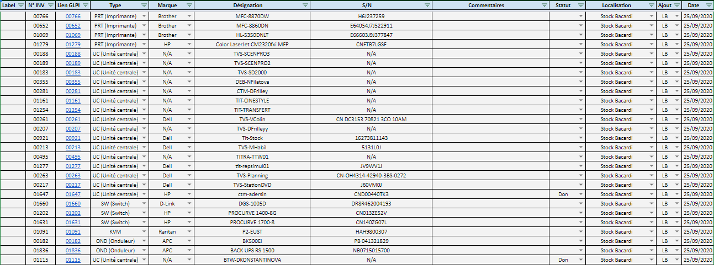

Contexte
Situation professionnelle - Gestion du cycle de vie des actifs informatiques
Afin d’être en conformité, l’entreprise doit faire appel à un prestataire afin de se débarrasser des actifs informatiques obsolètes, et hors service.
- Gestion DEEE
-
Cycle de vie d'un actif
Une gestion des actifs informatique réfléchi permet de gérer de manière stratégique l'acquisition, l'utilisation, la maintenance et la mise hors service des équipements. Elle englobe les stratégies et bonnes pratiques pour gérer et optimiser le système d'information de l'entreprise, notamment en terme d'aquisisition, de mise en service, de maintien et d'alinéation.

Le but est de permettre à l’entreprise d’avoir le meilleur retour sur investissement pour ses équipements. Par la maintenance, la négociation de contrats, la limitation des pannes, et une récupération de la valeur des équipements mis hors service. Ceci permettant de réduit les cout total de possession des équipements informatiques, permettant d'aqucérir un avantage concurrentiel.
Afin d’être en conformité, l’entreprise doit faire appel à un prestataire afin de se débarrasser des actifs informatiques obsolètes, et hors service.
Lorsque vient le temps de mettre les ressources informatiques hors service, un aspect crucial du processus consiste à s’en débarrasser de manière responsable. Souvent, les équipements qui fonctionnent peuvent obtenir une nouvelle vie, ce qui non seulement permet de récupérer de l’argent, mais aussi d’atteindre des objectifs en matière de développement durable et de RSE.
- Archivage
-
L’archivage de données : Consiste à enregistrer des données de manière à garantir sur un long terme leur pérennité à un état donné. Je suis régulièrement amené à archiver les données des collaborateurs, notamment les documents sur lesquels ils ont travaillé, afin de pouvoir les restaurer, si besoin.